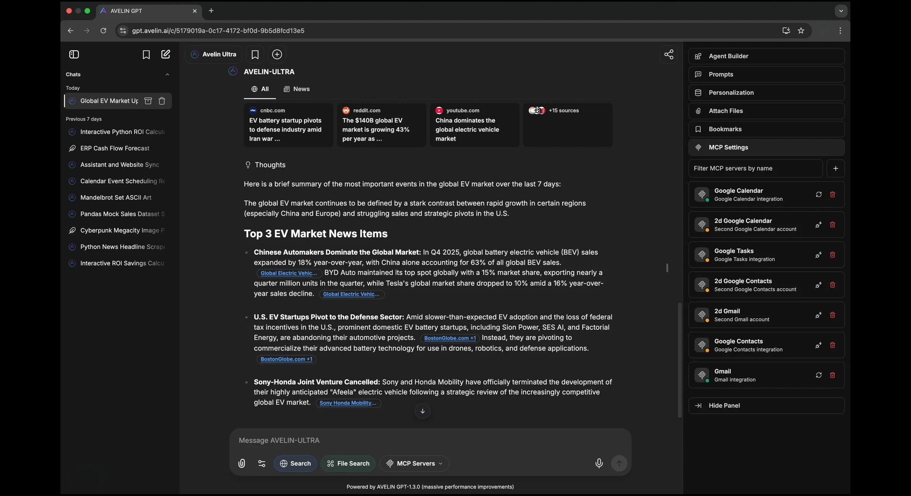
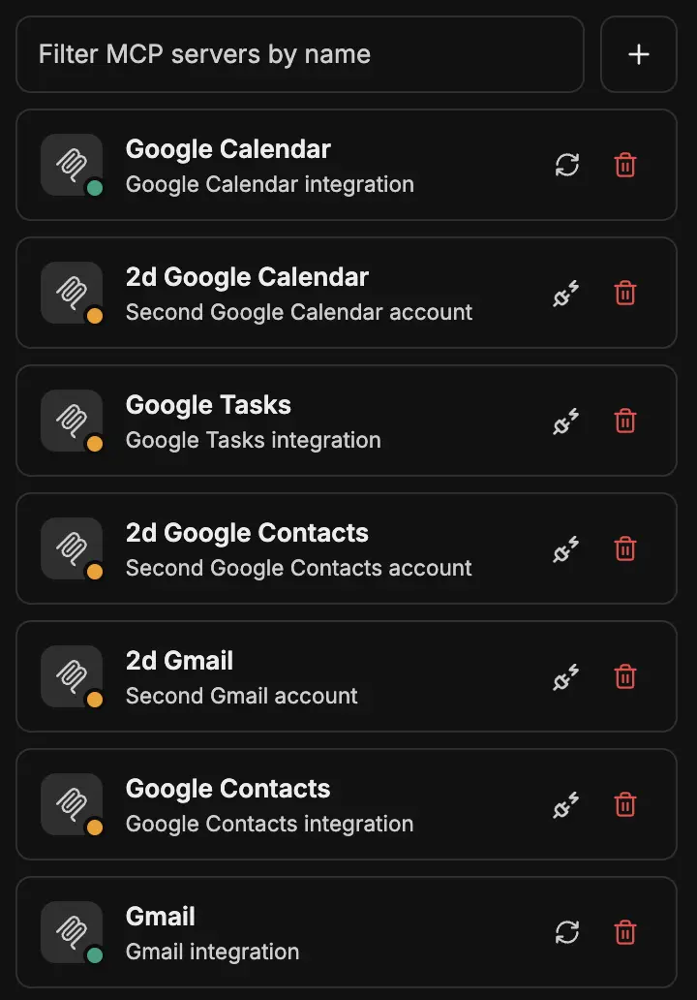
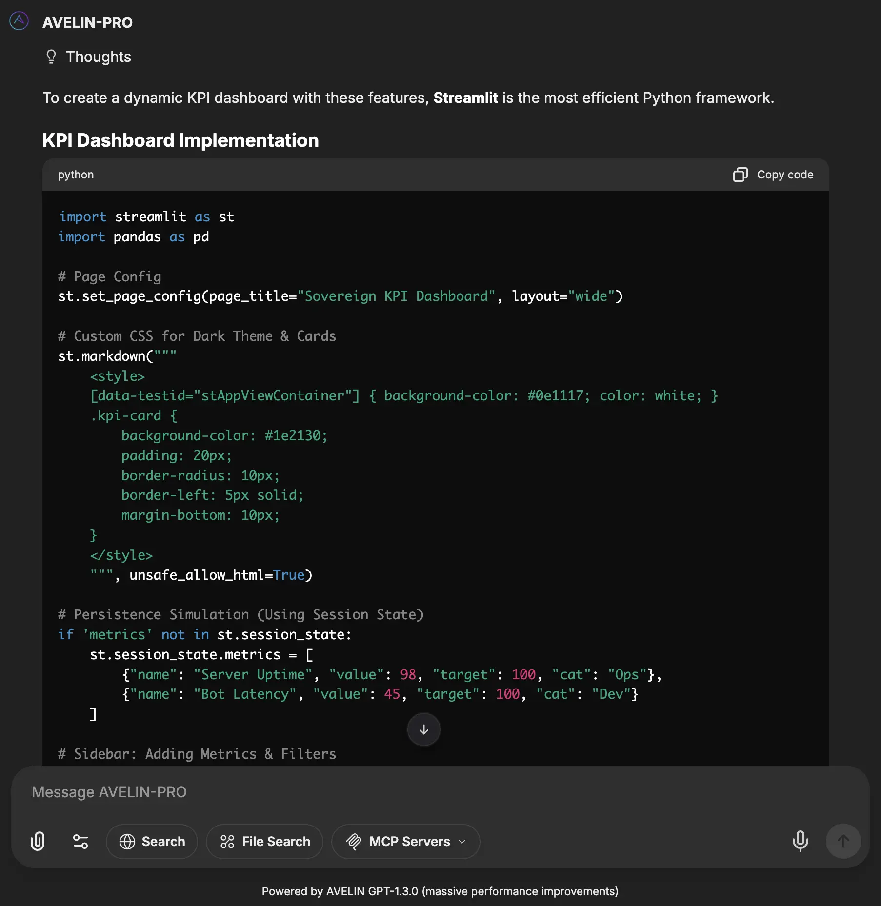
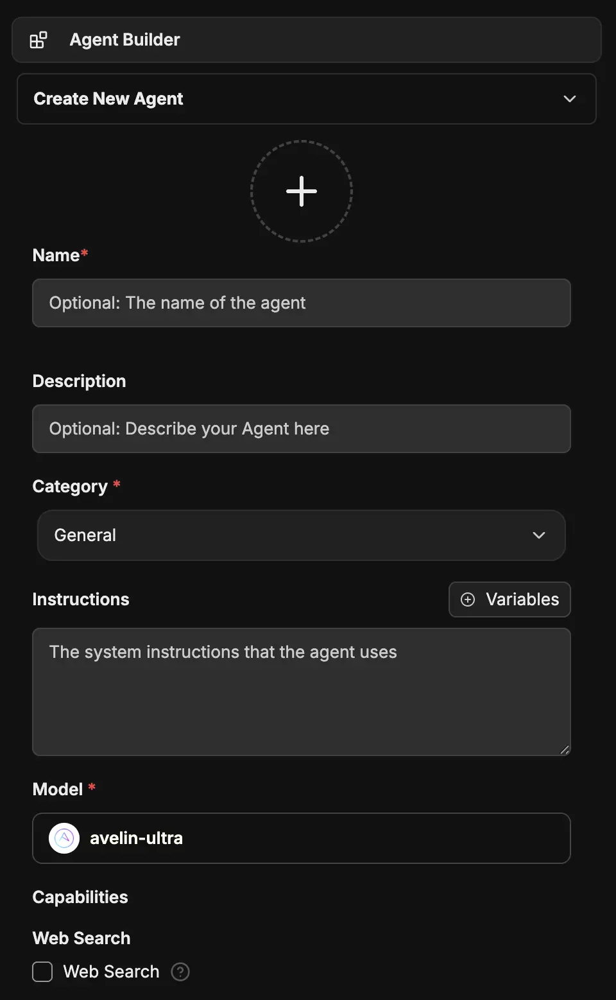
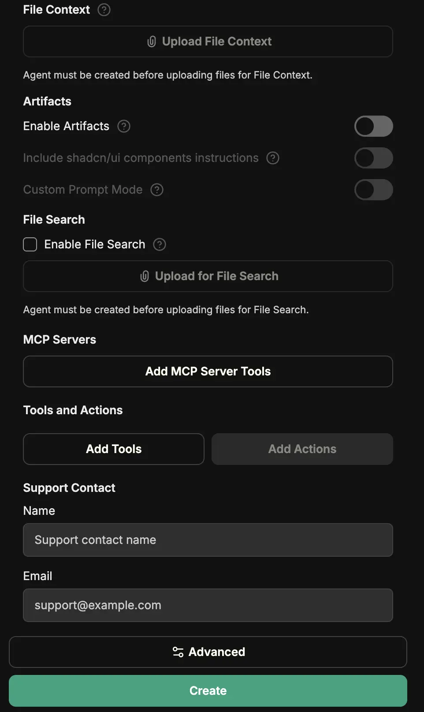
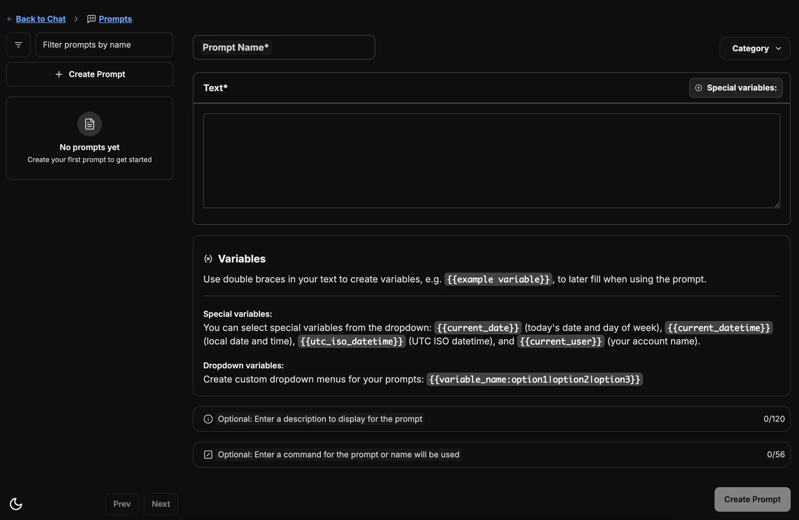
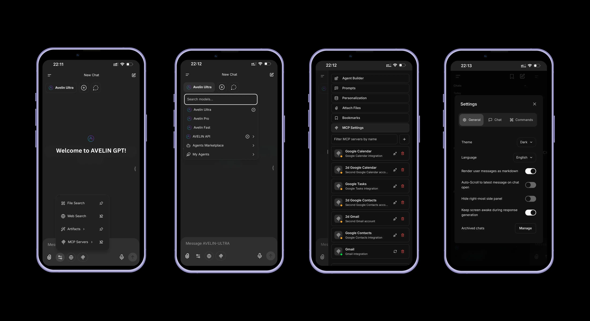

Your AI workspace. On AVELIN's own models
Everything you expect from an enterprise AI app: chat, code, agents, tools, memory, voice. Running on our own models, not someone else's. Available in your browser, or deployed inside your perimeter.
9 Model Families. Trained Cross-Model MoE
Our AI Lab builds Cross-Model MoE, a trained Mixture-of-Experts meta-model with a prompt-vector classifier trained on 1 year of production data. It predicts the optimal specialist with 90% accuracy, cascades by complexity, and synthesizes output quality above any single expert. This is trained AI technology with intelligent routing that selects the best path for each task.

Intelligence Family · up to 85% cheaper in our cloud
avelin-ultra
AVELIN's flagship model. Built for strategic planning, executive decision support, risk evaluation, and board-grade deliverables that require structured thinking and precision.
AA Index: 55/100
Strategic decisions · Risk analysis · Executive briefings
avelin-pro
High-speed, high-efficiency model for daily business workflows. Communication, meeting preparation, planning, and team coordination: fast and reliable at scale.
AA Index: 53/100
Drafting · Summaries · Workflow automation
avelin-fast
The fastest model in the AVELIN lineup. Optimized for real-time tasks: instant responses, live data processing, and low-latency workflows where speed is critical.
AA Index: 47/100
Code execution · Data processing · Real-time tasks
Coding Family · up to 86% cheaper in our cloud
avelin-coding-ultra
System-level design decisions, long-horizon refactors, and whole-repo analysis. Understands dependencies, patterns, and interfaces across hundreds of files.
AA Index: 52/100
System design · Architecture review · Migration planning
avelin-coding-pro
Maximized throughput for high-volume agentic loops, large multi-file refactors, and latency-sensitive CI/code-review pipelines where waiting kills developer experience.
AA Index: 49/100
Multi-file refactors · CI pipelines · Code review
avelin-coding-fast
Balanced engineering tier for day-to-day coding at the strongest cost-per-capability ratio. Write, review, refactor, debug with complete codebase awareness.
AA Index: 42/100
Feature implementation · Bug fixing · Testing
Agentic Family · up to 87% cheaper in our cloud
avelin-agentic-ultra
The strongest pick for security-sensitive tool-augmented workflows, deep research agents, and complex multi-step planning where quality matters more than per-step cost.
AA Index: 67/100
Long-running agents · Security workflows · Complex orchestration
avelin-agentic-pro
The standard agentic workhorse for tool-calling agents, regulated industries (healthcare, finance), and workloads where data sovereignty is required.
AA Index: 67/100
Tool-calling workflows · Task decomposition · Multi-step execution
avelin-agentic-fast
Cost-optimized agentic tier for agent swarms, bulk classification, retrieval re-ranking, and cost-sensitive agentic backends where every token counts.
AA Index: 38/100
Agent swarms · Bulk classification · Cost-sensitive backends
Benchmark methodology: Third-party, not self-graded. Scores on Artificial Analysis Intelligence/Coding/Agentic Indices (0-100 scale). Each index is a composite of 9-10 independent evaluations, pass@1 averaged over multiple repeats. AA Index v4.x, June 2026.
From conversation to execution
AI that acts. Not just answers
Through MCP (the open standard for AI-to-system integration), AVELIN App connects to your CRMs, ERPs, calendars, databases, and internal APIs. Workflows that required manual steps now execute autonomously, inside your secure perimeter.


Write it. Run it. Verify it
All three AVELIN models write, debug, and refactor code across any language. Code Interpreter executes it in a secure, isolated sandbox, available across all models. Mathematical modeling, data processing, scripting: confirmed results, not generated guesses.
Specialist assistants for every business function
Build AI assistants for Legal, Finance, HR, Operations, with their own tools, knowledge scope, and behavior. No coding. No prompting expertise. Deployed in minutes, shared across teams.


Save it once. Use it everywhere
Build a shared library of tested prompts across your organization. Save, organize, and reuse instructions with variables, so every team starts from a proven baseline, not a blank page.

Web Search
Give any model live internet access with built-in search and reranking to surface what actually matters.
File Search
Search across uploaded files and documents to instantly surface relevant content within your workspace.
Voice
Speech-to-text input and text-to-speech responses. Hands-free workflows and on-the-move briefings.
Debate Mode
Multiple intelligence paths argue opposing positions. Structured comparison: not a single biased answer.
Image Generation
Premium and high-speed image generation: Pro for polished deliverables and marketing assets, Lite for rapid iteration and volume creative work.
Artifacts
Render working React components, HTML pages, and Mermaid diagrams without leaving the conversation.
Intelligence over your knowledge base
Search the web, query your documents, and retrieve context from your knowledge base, all within a single governed interface.
Memory
Your AI carries context forward: preferences, history, and decisions persist across every conversation.
Personalization
Customize your workspace to match the way you work: language, chat behavior, speech settings, and more. Every user configures their own experience.
RAG API
Ask questions directly against your documents. Retrieval-augmented generation that stays grounded in your data.
Search
Instantly locate any message or conversation across your entire workspace, powered by Meilisearch.
Upload as Text
Drop in any file and the model reads it as text. No manual extraction, no preprocessing required.
OCR
Pull structured text out of scanned documents, images, and PDFs, ready for analysis or indexing.
Designed for the way enterprise teams work
Conversation tools built for real workflows: branching, sharing, migrating, and protecting sensitive discussions across your organization.
Commands
Keyboard shortcuts built into the conversation: @ to switch models, + for multi-response mode, / to select from your prompt library.
Fork
Branch any conversation into parallel threads. Explore multiple approaches without losing original context.
Bookmarks
Save important conversations for instant access. Organize and revisit key discussions without searching through history.
Shareable Links
Share conversations across teams with configurable access controls.
Temporary Chat
Ephemeral sessions for sensitive discussions. Nothing saved. No trace.
Import Conversations
Migrate existing conversation history from other AI platforms.
Resumable Streams
Interrupted responses auto-reconnect and continue. No lost work.
Security built in, not bolted on
Multi-factor authentication, self-service password recovery, and built-in content moderation: security that works for teams of any size.
Authentication
Multi-user auth with OAuth2, SAML, LDAP, and two-factor authentication. Enterprise-ready SSO on day one.
Password Reset
Self-service password recovery via email, fully managed within your environment.
Moderation System
Built-in content moderation and safety controls: configurable policies for every team and use case.
Available wherever your team works
Access AVELIN App from any browser or install it as a PWA on desktop and mobile. No App Store. No native install required.

Your AI. Your infrastructure. Your rules
Talk to our engineering team about deployment architecture, compliance requirements, and how AVELIN App fits into your infrastructure.